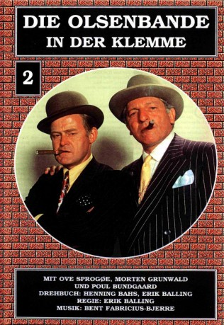
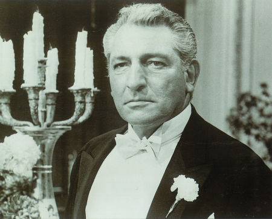
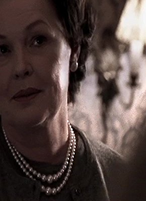

#5400 Olsenbande 02 - Die Olsenbande in der Klemme
 gesehen am 06.02.2017
gesehen am 06.02.2017
 
 IMDB-Wertung: 6.5 / 10
IMDB-Wertung: 6.5 / 10  Metascore: 0
Metascore: 0 
Zweiter Teil mit der Olsen-Bande aus dem Jahr 1969. Nach einem misslungenen Banküberfall schwört die Gaunerbande dem Verbrechen ab. Absofort betätigen sich die drei Männer als Reinigungskräfte eines Tresorraumes. Dieser wird eines Tages überfallen. Die Olsen-Bande wird verdächtigt. Sie versucht die wahren Täter ausfindig zu machen, um sich selbst der Beute zu bemächtigen.
Jahr: 1969
Dauer: 104 Minuten
FSK: 12
Land: Dänemark Studio: Nordisk Films KompagniTonspuren:
Untertitel:
Auflösung: 1080p (1808x1080) Größe: 5396 MB
Genre: Komödie, Krimi
Regisseur: Erik Balling
Drehbuch: Martin Gies
Soundtrack:
Darsteller:
- Morten Grunwald als Benny Frandsen
-  Harold J. Stone als Serafimo Mozerella
- Ove Sprogøe als Egon Olsen
- Poul Bundgaard als Kjeld Jensen
-  Ghita Nørby als Bodil Hansen
- Peter Steen als Kriminalassistent Mortensen
- Preben Kaas als Dynamit Harry
- Poul Reichhardt als Politichefen
- Paul Hagen als Hansen
- Kirsten Walther als Yvonne Jensen
- Karl Stegger als K.O.R.S. inspektør
- Birger Jensen als Helmer
- Jes Holtsø als Børge Jensen
- Kjeld Brask Andersen als Legetøjsfabrik arbejder , uncredited
- Gert Bastian als (uncredited
- Svend Bille als Direktør for legetøjsfabrik , uncredited
- Anders Bodelsen als Bankansat , uncredited
- Jan Due als Gangster , uncredited
- Edward Fleming als Serafimos håndlanger , uncredited
- Benny Hansen als Politichauffør , uncredited
- Kirsten Hansen-Møller als Bilist , uncredited
- Lise Henningsen als Letlevende dame , uncredited
- Edith Hermansen als (uncredited
- Paul Hüttel als Bankrøver , uncredited
- Wladirmir Kandel als (uncredited
- Palle Kjærulff-Schmidt als Bankansat , uncredited
- Viggo Larsen als Østriger , uncredited
- Ernst Meyer als Forskræmt mand i bil under biljagt , uncredited
- Marteng Petersen als Legetøjsfabrik arbejder , uncredited
- Bjørn Puggaard-Müller als Vagt i Nationalbanken , uncredited
- André Sallyman als Gangster , uncredited
- Jørgen Teytaud als Politibetjent , uncredited
- Johan Thiersen als Østriger , uncredited
- Poul Thomsen als Værkfører på legetøjsfabrik , uncredited
- Holger Vistisen als Præst , uncredited
Datei: X:\7+mehr(A-Z)\Olsenbande\Olsenbande 02 - Die Olsenbande in der Klemme (1969, FSK12, 1808x1080).mkv seit 28.01.2017
Festplatte: HD Collection-7+mehr(A-Z)+Person
 Es gibt insgesamt 17 Filme in der Gruppe '7+mehr(A-Z)\Olsenbande'
Es gibt insgesamt 17 Filme in der Gruppe '7+mehr(A-Z)\Olsenbande'